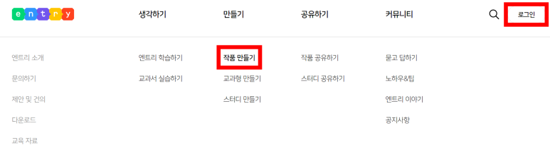
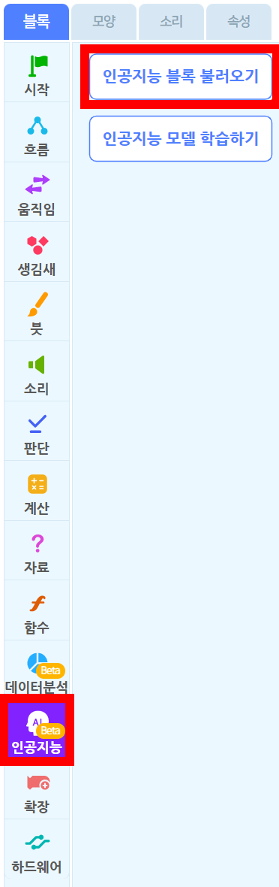
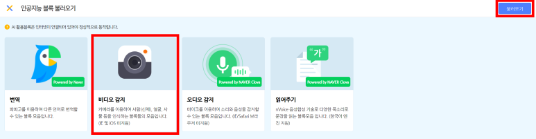
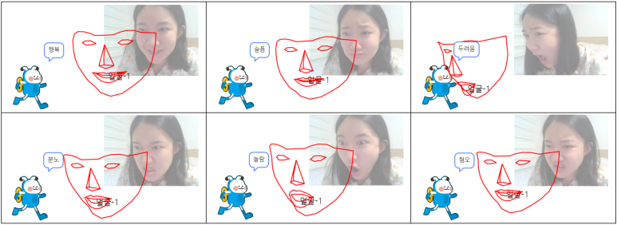

프로젝트 1-1
엔트리를 통한 감정을 맞추는 AI 체험하기
1. 엔트리 접속하기
https://playentry.org/
2. 로그인 - 작품 만들기

3. 인공지능 - 인공지능 블록 불러오기

4. 비디오 감지 - 불러오기

5. 코딩하기

6. 감정을 맞추는 AI 체험하기

엔트리를 통해 인간의 감정을 맞추는 AI를 만들어 봅시다
엔트리봇이 여러분의 감정을 잘 맞추었나요?그렇다면 만들기 과정을 통해 여러분들이 직접 AI을 만들어봅시다.